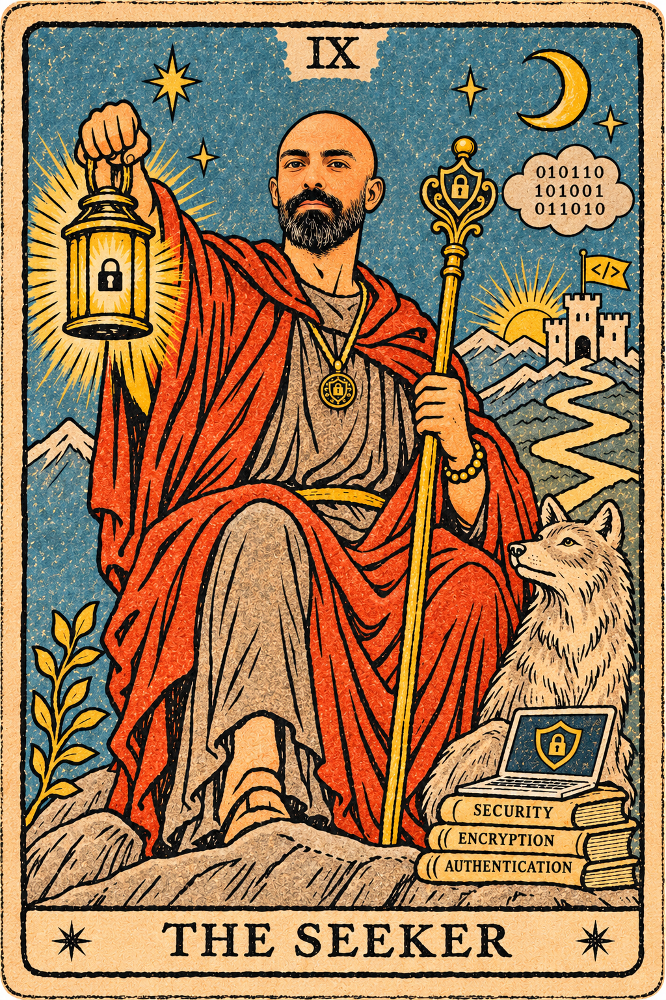

Postdoctoral Researcher · Software Technology Group
TU Darmstadt · Darmstadt, Germany
Software Security Researcher
Postdoctoral Researcher · Software Technology Group · TU Darmstadt
Latest news Discover my work01 / About
I am a postdoctoral researcher in the Software Technology Group at TU Darmstadt, Germany.
My current research focuses on understanding the challenges developers face in building secure software and developing approaches and tools that support secure software development.
During my PhD, I investigated cryptographic API misuses and the potential of large language models to help developers detect and mitigate them. I also hold an M.Sc. in Information Technology Engineering with a specialization in Secure Computing from Shiraz University, obtained in 2020.

02 / Updates
Loaded from data/news.txt
Loading news…
03 / Selected research
Explore work on cryptographic misuse detection, secure APIs, LLM security, and empirical software engineering.
Loading publications…
04 / Background
TU Darmstadt · Darmstadt, Germany
TU Clausthal (DIGIT) · Goslar, Germany
Pars Diamond · Shiraz, Iran
Fars Deeds and Real Estate · Shiraz, Iran
Noavaran Danesh Faragir Institute · Shiraz, Iran
05 / Teaching
Courses focused on finding vulnerabilities, understanding real-world weaknesses, and building safer systems.
Buffer overflow detection, code injection, and mitigation
Vulnerabilities in Stack Overflow, GitHub, and AI-generated code